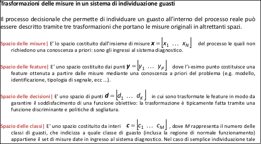

Individuazione e isolamento guasti sono le fasi fondamentali della diagnosi, tuttavia esistono anche altre informazioni che un sistema diagnostico dovrebbe essere in grado di fornire.
Le tecniche di diagnosi guasti devono permettere di determinare il tipo di guasto che si è verificato, con il massimo dei dettagli possibili: la dimensione, la posizione e l'istante di determinazione.
Le procedure di diagnosi si basano generalmente su osservazioni analitiche e su sintomi rilevati in modo euristico, il tutto unito ad una conoscenza euristica del processo.
La presente lezione ha l’obiettivo di introdurre la diagnosi guasti, fornendo le conoscenze di base per l’analisi successiva dei metodi più comuni di classificazioni ed inferenza utilizzati per estrarre informazioni diagnostiche.
Tipi di funzioni nella diagnosi dei fault
Fault Detection (FD – individuazione del fault): determinazione dei fault presenti nel sistema e dei momenti in cui essi sono individuati.
Fault Isolation (FI – isolamento del fault): determinazione della tipologia, posizione e tempo di individuazione del fault; segue la fault detection.
Fault Identification (FId – identificazione del fault): determinazione della dimensione e del comportamento tempo variante di un fault; segue la fault isolation.
Fault Diagnosis (FD – diagnosi del fault): determinazione della tipologia, dimensione, posizione e tempo di individuazione del fault; include la fault detection, isolation e identification.
Sintomi e caratteristiche distintive
Feature| Una caratteristica distintiva estratta da un sistema reale dalla cui analisi è possibile
ricavare informazioni sul corretto funzionamento dello stesso (e.g. parametro, variabile di
stato, residuo, ecc ...).
Sintomo| Cambiamento non usuale di una feature rispetto al suo valore abituale o nominale.- Sintomo analitico| Sintomo generato dall'insieme delle procedure quantitative in precedenza analizzate (limit cheching, signal-process fault detection, processo matematico, ecc ...).
- Sintomo euristico| Sintomo generato in maniera qualitativa a partire dalle osservazioni delle persone che operano sul processo (rumore acustico, oscillazioni, vibrazioni, colore, fumi, ecc ...).
Serie storica e statistica del guasto| Dati storici sul processo: se tali informazioni non vengono sufficientemente strutturate (ad esempio con modelli) oppure sono di bassa qualità, anche queste informazioni possono essere considerate come heuristic symptoms.



Prestazioni desiderabili di un sistema di diagnosi guasti
Un sistema diagnostico dovrebbe possedere le seguenti caratteristiche.
Veloce individuazione|
- Un sistema di individuazione dei guasti dovrebbe rispondere velocemente al comparire di malfunzionamenti.
- Tuttavia una tempo ridotto di individuazione di un guasto e performance accettabili durante il periodo di normale funzionamento sono specifiche contrastanti: un sistema che è progettato per individuare un guasto velocemente è anche molto sensibile ai disturbi in alta frequenza.
- Il trade-off tra falsi allarmi e tempo di individuazione di un guasto è quindi dipendente dal processo (e di conseguenza dal guasto da diagnosticare).
Robustezza|
- Un sistema di individuazione dei guasti deve essere robusto sia ai rumori sia alle incertezze.
- Garantire la robustezza implica scegliere soglie non troppo vicine allo zero, tuttavia ciò introduce ritardo nel tempo di individuazione.
- In maniera analoga a quanto visto prima è necessario bilanciare robustezza e velocità di individuazione.
Prestazioni desiderabili di un sistema di individuazione guasti
Adattabilità|
- I processi, in generale, cambiano ed evolvono nel tempo a causa di modifiche degli ingressi, dicambiamenti strutturali, ecc ...
- Le condizioni operative dei processi si modificano anch’esse a causa dei disturbi, delle condizioni climatiche, modifiche del carico di lavoro, ecc ...
- Il sistema di individuazione dei guasti deve essere in grado di adattarsi a questi cambiamenti e fornire informazioni diagnostiche corrette man mano che nuove informazioni (i.e. misure) diventano disponibili.
Requisiti di modellazione|- La quantità di informazioni richieste per lo sviluppo di un modello è una caratteristica importante.
- Per lo sviluppo di sistemi veloci e facile da implementare per l’individuazione guasti in tempo reale è fondamentale che lo sforzo di modellazione sia minimo.
Occupazione memoria e complessità di calcolo|- Tipicamente le soluzioni in tempo reale richiedono algoritmi e implementazionicomputazionalmente leggere, ma che richiedono dall’altro lato un’occupazione notevole della memoria.
- Un sistema di individuazione dei guasti dovrebbe configurarsi come un buon bilanciamento tra occupazione della memoria e complessità di calcolo.
Individuabilità di fault multipli|- L’abilità di individuare fault multipli è un requisito fondamentale ma al tempo stesso molto difficile da soddisfare.
- Ciò è dovuto al fatto che i fault sono di norma interagenti tra di loro: in un sistema generico, infatti, non è sempre possibile capire le relazioni di causa-effetto tra un fault e le variazioni a livello di variabili misurate, in quanto una variabile è influenzata da uno o più parametri e/o ingressi in maniera simile.
- Un’analisi esaustiva di tutte le tipologie di fault e dei loro effetti sulle variabili misurate, inoltre, sarebbe proibitivo per un sistema su larga scala.
- L’individuabilità di fault multipli, quindi, è fortemente dipendente dal processo in esame.